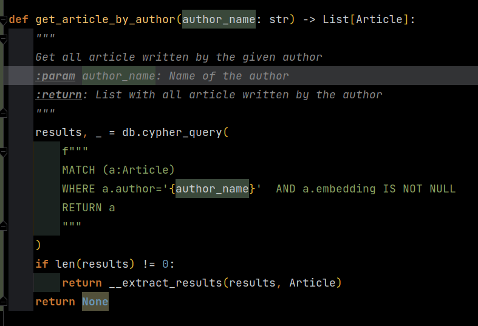
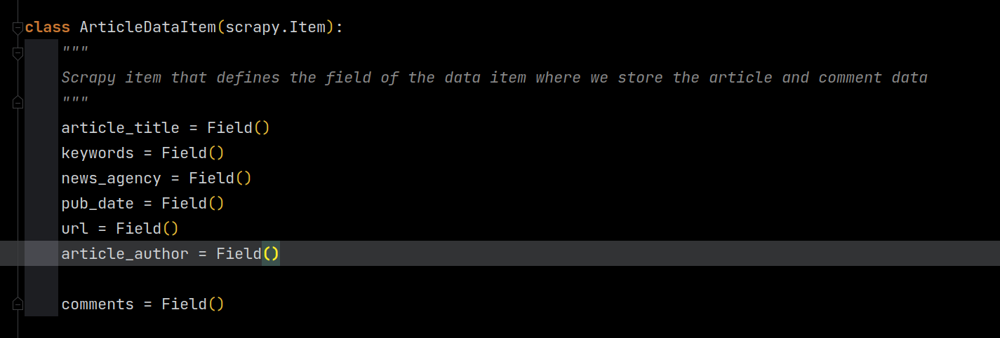

Update Database Schema
If you want to scrape and store other data from the articles and comments in your database, you can update the database schema and the pipeline methods to store the data in the database.
Let’s add the author of the article and the comment to the nodes.
1.) Update the Database Schema
In the first step, we have to update the classes defining the properties of the Neo4J nodes. For this, open article
and comment in DB/db_models. Here, you see the classes defining the properties and the relationships of the nodes.
{kind=link}
We want to add a new field or property for the author of the article in the Article class. Therefore, we write
a new class variable in the Article class with a StringProperty. This defines the value of the property.
{kind=link}
Note
Please note that the properties in the database are named exactly as you name them here.
To add a new property to the comment node, you proceed exactly as you did in the Article class and add a new field
to the Comment class in DB/db_models/comment.
{kind=link}
{kind=link}
Optional: Add new Database Utils Methods
If you would like to, now you can add some new utils methods to query nodes based on the changes you made to the properties.
For example, in the previous step, we added the property author to the Article node. Maybe, we would like to
get all articles written by this author. To do so, we add a new method to DB/utils to query these nodes.
The method would look like this:
{kind=link}
If you are not familiar with Neo4J Cypher Queries and neomodel, let’s look at this together.
First, we call db.cypher_query with a cypher query as a format string. This methods send the query to the database and returns two values.
However, we are only interested in the first, the results.
The cypher query consists of three parts:
1.) The MATCH part. Here, we define what type of structure we look for. In our case a singe article node.
2.) The WHERE part. Here, we narrow the result set with some conditions. In our case, we only want article nodes
with a author named like the author we are looking for.
3.) The RETURN part. Here, we specify what we would like to return from the database. In our case the complete article node.
However, we could also only return some specific properties here.
Note
To learn more about Neo4j Cyper Queries. Please visit (https://neo4j.com/developer/cypher/)
Then, if we found some article nodes written by the given author, we hand them over to the __extract_results method
to inflate them. This means that we convert the result from raw neo4j driver to a object with the properties, we defined
in `Article` class from the previous step.
2.) Update the News Agency Scraper Pipeline and Article Data Item
Next, we update the News Agency Scraper and for this, we have to update two files in NewsAgencyScraper items and pipelines. The first
one defines the data structure where we store the data during the scraping process and the second one stores the items
in the database.
Items
The purpose of the items class is nearly the same as for article or comment in db models. We define the fields
of our data structure where we store the data during the scraping process.
At the moment our ArticleDataItem looks like this:
{kind=link}
Now we add the new field we need to store the article author and the comment author.
{kind=link}
Note
To learn more about Items. Please refer to (https://docs.scrapy.org/en/latest/topics/items.html#declaring-fields)
Pipeline
Next, we update the pipeline to store the values from our item in the database. For this, open the pipelines file.
There you find the ScraperPipeline with the process_item method. This method is called for every item which
always contains one article.
{kind=link}
We update the method by adding the author field to the Article and Comment constructor and assign the appropriate
values from the items dict. Please note that different fields in the items dict are lists. Therefore, we have to
add the index to get the singe value from the fields. If you look closely you notice that we use the list data structure to store all comments
that appeared under the article as a field called comments.
Update Spyder
The last thing here, you have to do is to update the spyder which scrapes the news agency site. Here, you have to store
the new values article_author and comment_author in the ItemLoader.
3.) Update CSV Reader
If you want to read other properties from you CSV files and store them in the database. You have to update two methods in
__store_article and __store_comment. Here, you have to update the instantiation of Article and Comment.